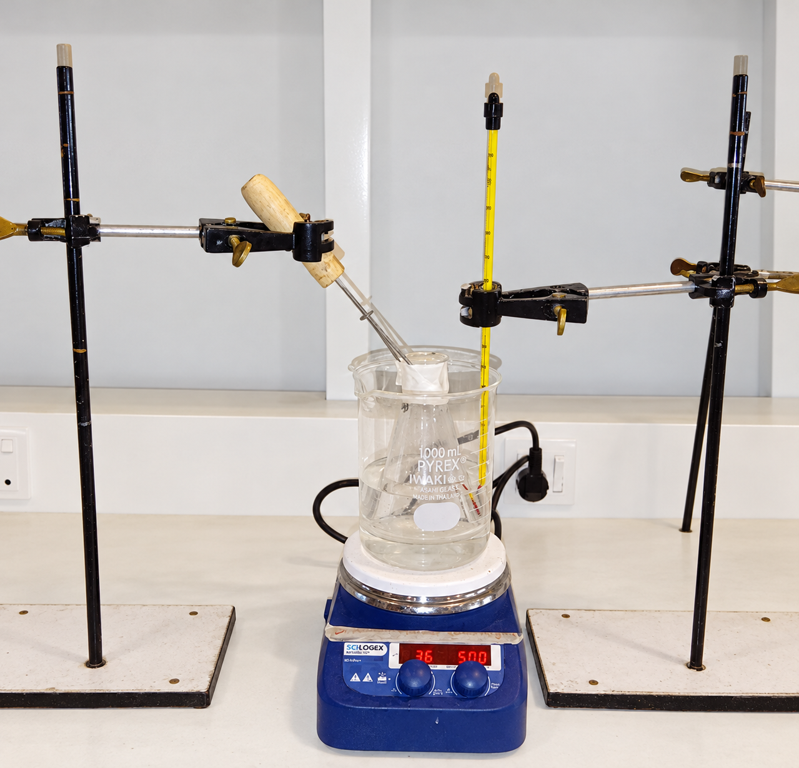
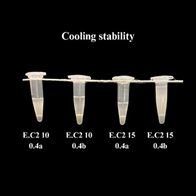
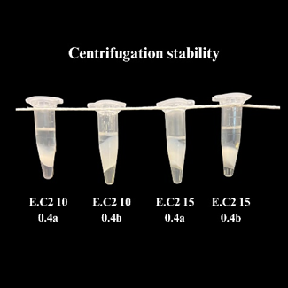
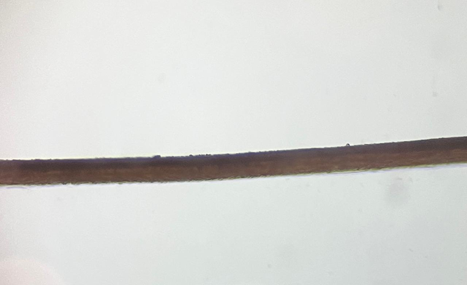
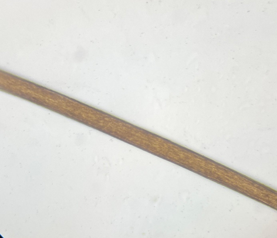

← Research experience
Wet-lab / formulation research
Essential Oil-Based Formulation for Anti-Lice Application
Contributed to formulation development, apparatus setup optimization and physical stability assessment of an essential oil-based system intended as a water-in-oil nanoemulsion.

Formulation apparatus
01 / Research objective
Research objective
Develop and evaluate a scientifically grounded water-in-oil nanoemulsion for potential anti-lice application, addressing the limited evidence supporting locally available anti-lice hair oils.
02 / My contribution
What I did
- Contributed to the preparation of essential oil-based water-in-oil emulsions using surfactant-assisted emulsification.
- Performed hands-on processing involving magnetic stirring, controlled heating and ultrasonic bath sonication.
- Contributed to optimizing the laboratory apparatus setup used for formulation preparation and processing.
- Prepared and compared unsonicated and sonicated formulations and participated in the evaluation of processing conditions.
- Assessed stability through heating, cooling, centrifugation and storage observations, alongside pH and density measurements.
- Recorded and compared physical characteristics including phase separation, transparency, cloudiness, sedimentation, viscosity and homogeneity.
03 / Research development
Skills gained
- Experimental planning and systematic comparison of formulation and processing conditions.
- Formulation optimization through systematic variation of essential oil concentration and continuous-to-dispersed phase ratios.
- Apparatus setup optimization and practical experimental problem-solving.
- Observation and interpretation of formulation appearance and physical stability.
- Consistent data recording, comparative analysis and scientific documentation.
Laboratory documentation
Formulation & microscopy gallery



